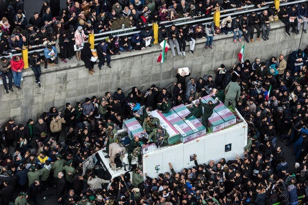

Inside the Trump administration, officials are expressing fears that Iran is in the “advanced stages” of planning attacks against U.S. officials.
More than 6,000 miles away, the Iranians appear convinced that Israel and the United States are preparing to unleash their third major attack in 16 months, a final push to force Iran to surrender to U.S. demands.
The conflict in the Middle East has entered a new phase in which a maelstrom of factors, from the political calendars in the United States and Israel to the potential for all sides to be seeking pretexts for action, are creating heightened levels of tension and risk.
This is how countries can escalate into full-scale war, several diplomats and outside experts noted. If the U.S. intelligence disclosed this week is right that Iran has credible plans to attack Americans at home and abroad, one senior European official said — “and it probably is,” the official added — one gunshot that appears aimed at a U.S. official could touch off a conflagration. So could a stray explosion near a bunker sheltering Iranian leaders, who already survived their predecessors’ deaths in a decapitation strike in the opening hours of the war on Feb. 28.
The fact that Prime Minister Benjamin Netanyahu of Israel and President Trump are facing critical elections that could dramatically affect the balance of power in their countries feeds into the complex set of calculations that all sides are making. Even if he is defeated on Tuesday, Mr. Netanyahu could decide to launch one last strike that he may believe his successor would hesitate to execute. Similarly, Mr. Trump, who knows how unpopular the war is even among his strongest supporters, may want to show that at least when it comes to his powers as commander in chief, his authority is undiminished.
And, as in other moments of global peril — the Cuban Missile Crisis and the decision to invade in Iraq, as examples — partial or faulty intelligence, or just a failure to understand the adversary’s true motives, can carry deadly consequences. Iraq poses another cautionary tale, when selective intelligence can be used as an actual pretext for military action.
U.S. officials say they are focused on elements of the most recent intelligence suggesting that the Iranians may seek to kill U.S. ambassadors in the Middle East and American officials on U.S. soil — a longtime ambition of Iran’s elite Unit 840, which has carried out kidnappings and assassinations around the globe. But history suggests Iran’s desires often outstrip its capabilities. It has at times hired hapless hit men who have been arrested before they could do harm.
Still, those incidents are a reminder that U.S. and Iranian fears are rooted in bitter experience. And while Mr. Trump has said he would not attack before the midterm elections in 10 days, he has also hinted that all bets are off after that. Senior U.S. officials say that in private, Mr. Trump appears to be leaning toward another round of major strikes inside Iran. Plans developed by Central Command detail an expanded list of bombing targets, including energy infrastructure and other sites vital to the Iranian economy, according to an official with direct knowledge of the planning.
Echoing Mr. Trump’s bombast, a senior official in Iran took to social media in recent days to say the country was preparing to take on its adversaries with surprise attacks, with “zero red lines.”
A Rising Threat
U.S. officials and European allies said the intelligence about potential attacks had been rising in recent weeks, since a suspected Iranian plot against a military base in Britain used by the U.S. military.
The intelligence reviewed by senior officials included Iranian plotting of how to respond to an attack by either the United States or Israel with an assassination campaign, as well as other attacks Iran could carry out in retaliation for earlier U.S. attacks, officials said.
The intelligence about the plots remains highly classified, so it is hard to judge. Only the most senior U.S. lawmakers — members of the so-called Gang of 8 — had been briefed before the warning in a memo from Jay Clayton, the director of national intelligence, became public on Friday. Some officials have been puzzled by why Trump administration officials released the memo, given that they knew they could not back it up by discussing evidence of specific plots.
The gap between what Mr. Trump and most of his advisers say about the war publicly and the intelligence they are receiving is wide, and neither the White House team nor Pentagon leadership has given a briefing on the conflict in months. The president prefers to keep information closely held, but that has merely heightened the risks.
But the essence of the intelligence findings is that several Iranian plots have moved from the aspiration stage toward execution. And a Western official compared the U.S. reaction with the response to the warnings of the Iranian threats to attack American personnel and bombers at R.A.F. Fairford, a base in southern England, earlier this month. A dozen B-1 Air Force bombers were withdrawn, and Iranian officials said that if they returned, it would be taken as a sign of imminent attack.
Mr. Trump said nothing to reporters on Saturday about the intelligence, but did say he would decide soon whether to take renewed military action. He has been briefed regularly on the new intelligence, which some officials say is being taken more seriously than any warnings since the war began.
There is some evidence the Iranians have operatives inside the United States who are “not just simply Iranian nationals,” one official said. But even if Iranians are plotting attacks from the United States, it is not clear they can.
They note that Iranian officials, in their communications with colleagues, often exaggerate their ability to carry out covert overseas attacks.
Still, Iran almost always finds criminals and hit men to hire for assassination plots, particularly in Europe and the United States. The danger of any specific attack plan, U.S. officials cautioned, depends on the competence of the criminal hired to carry out an assassination, U.S. and Western officials said.
Haunting Memories From 2024
This is not the first time Washington has gone through this exercise.
The mix of real threats from Iran against Mr. Trump and some of his top advisers, along with other potential assassination attempt scenarios, created a climate of fear and paranoia for the president’s team throughout the 2024 campaign. Those threats had grown in intensity throughout Mr. Trump’s four years out of office, and were animated in part by Mr. Trump’s decision in January 2020 to order a strike on the head of Iran’s elite Quds force, Maj. Gen. Qassim Suleimani.
The Biden administration tracked an increase in threats, and the F.B.I. arrested a Pakistani nationalist on July 12, 2024, charging him with a murder-for-hire plot directed by the Islamic Revolutionary Guard Corps against Mr. Trump.
Separately, President Joseph R. Biden Jr.’s senior advisers had tracked what was described as a credible threat against Mr. Trump from Iran, and sent countersnipers to his outdoor rally in Butler, Pa., on July 13 that year. One of those snipers shot an attempted assassin, Thomas Matthew Crooks, who officials said was acting on his own and had no connection to a foreign plot.

But the back-to-back incidents — along with a hacking of campaign officials’ emails that was said to have been led by Iran — generated constant fear inside the Trump campaign.
Other perceived threats and anxieties were comical. A small item was discovered in the campaign headquarters in South Florida, prompting a 9-1-1 call and fears it was a listening device. It turned out to be a device that could be purchased online, a prank carried out by someone on the campaign.
The Trump team has continued to sift through threats, including against senior White House officials. They pay close attention to the names of officials mentioned by Iranians in intercepted chatter.
In Iran, Telegraphing the Reaction
Iranian officials believe their most inspired moves after the Feb. 28 attack included striking U.S. bases across the Middle East and closing the Strait of Hormuz, which caught U.S. officials off guard. They have made no secret about their intentions to expand the scope of the war if a third round of fighting breaks out. In public remarks, senior officials have threatened to target civilian infrastructure, energy sites and underwater fiber optic cables that carry internet and other communications traffic.

Two Iranian officials, one of them a member of the Revolutionary Guards, said in interviews on Saturday that the expansion of targets also included U.S. diplomats and personnel. The officials, who asked not to be named because they were not authorized to speak publicly, confirmed State Department reports about Iran’s plot to target Americans.
The officials defended the plan and noted that Israel and the United States had killed dozens of Iranian officials and some family members. In their view, they said, that made targeting Americans “fair game.” It is not clear whether they have the reach, however.
Iran’s success rate has measurably deteriorated compared with the 1980s, in the earlier years of the revolution, when it carried out a string of assassinations of Iranian political dissidents.
Mahdi Mohammadi, a senior adviser to Mohammad Bagher Ghalibaf, the lead negotiator and speaker of parliament, said on social media that Iran views the coming part of the war as existential.
“We are in a surprise phase of the war, and we will not fight a classic war,” Mr. Mohammadi said. “It will be an asymmetrical, fierce and conclusive war that will target the enemy’s strong points and weak spots.”